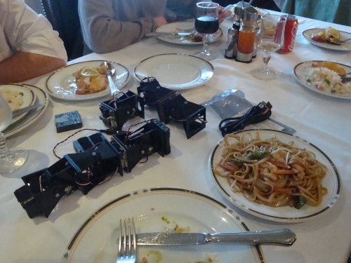

El otro día quedamos
Andrés Prieto-Moreno,
Ricardo Gómez,
Javier Valiente y
yo en un restaurante chino
para comer y de paso hablar sobre el I taller de robots modulares.
Como manda la tradición robótica, las reuniones hay que hacerlas en un restaurante chino 😉

Sobre la mesa, rodeados de comida china, están algunos de los prototipos que se usarán en el taller. El más básico es un módulo Y1 con una tarjeta Skycube. Lo único que hace es oscilar y lo usaremos para enseñar los conceptos básicos de osciladores.
El segundo prototipo es Minicube-I, formado por dos módulos Y1 con conexión de cabeceo-cabeceo. Es el robot mínimo que se puede mover en línea recta, adelante y atrás, usando dos osciladores. El prototipo del taller estará formado por dos módulos una Skycube y un portapilas. Los asistentes aprenderán los principios básicos de coordinación para lograr la locomoción (ver vídeo)
El siguiente prototipo será una configuración PPP, formada por tres módulos y una skycube. En la foto no está. Se mueve sólo en línea recta, pero permitirá a los asistentes ver qué ocurre cuando se añaden más módulos y cómo afecta a la coordinación.
El cuarto prototipo será Minicube-II. Es un ejemplo del robot modular mínimo, con topología de 1D que es capaz de realizar 5 movimientos diferentes (ver vídeo)
El taller culminará con algo que he estado esperando durante mucho tiempo: construir un robot “serpiente” muy largo. Los asistentes unirán todos sus robots Minicubes-II para formar uno más grande, que se moverá de manera autónoma por el suelo. Se llamará Super-Cube.
Los módulos que están en la foto son los Y1, sin embargo en el taller usaremos los MY-1, que está actualmente diseñando Andrés Prieto-Moreno.
Fechas!! Fechas!!
Posiblemente a finales de Junio, pero todavía no hay nada fijado